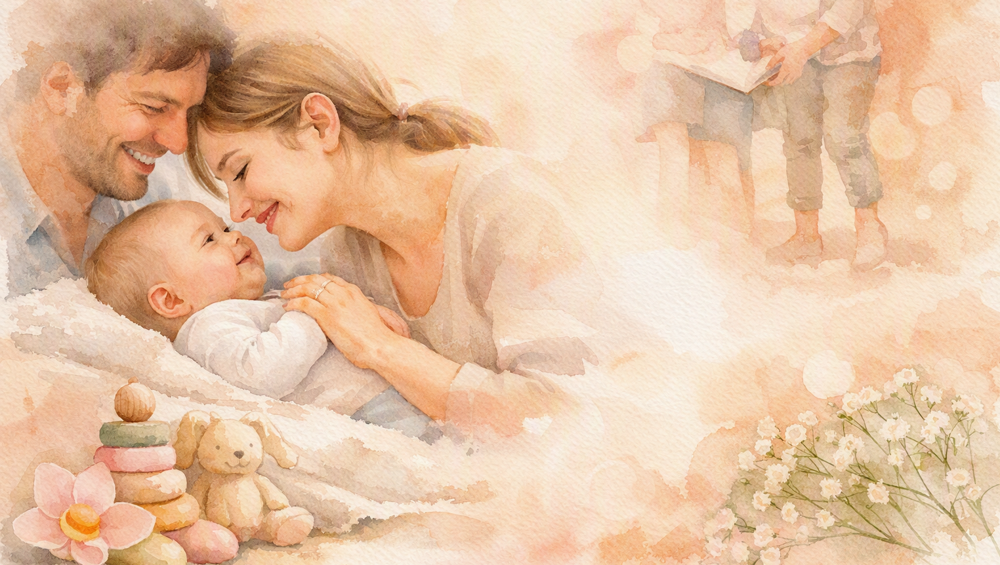

L’accompagnement petite enfance permet de soutenir les parents dans les défis du quotidien : sommeil, émotions, pleurs, alimentation, motricité, séparation, arrivée d’un bébé, etc.
Je propose des séances d’écoute, d’observation et de guidance pour comprendre les besoins de l’enfant et renforcer la confiance parentale.

Retour à l’accueil